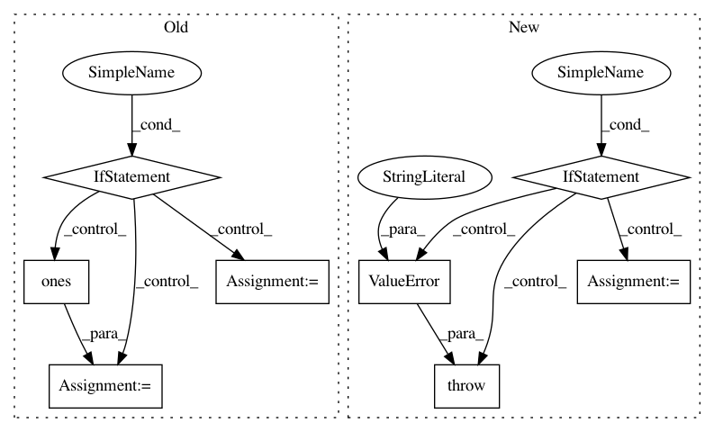

60b6d7a3777d1e0c4b17bc954823951aac857fab,io/eolearn/io/sh_add.py,AddGeopediaFeature,execute,#AddGeopediaFeature#Any#,295
Before Change
request_data = np.asarray(request.get_data())
if eopatch.feature_exists(self.feature_type, self.feature_name):
raster = eopatch.get_feature(self.feature_type, self.feature_name)
else:
raster = np.ones(dst_shape[1:3], dtype=self.raster_dtype) * self.no_data_val
new_raster = self._reproject(eopatch, self._to_binary_mask(request_data[0]))
// update raster
raster[new_raster != 0] = new_raster[new_raster != 0]
After Change
request_data, = np.asarray(request.get_data())
if isinstance(self.raster_value, dict):
raster = self._map_from_multiclass(eopatch, (height, width), request_data)
elif isinstance(self.raster_value, (int, float)):
raster = self._map_from_binaries(eopatch, (height, width), request_data)
else:
raise ValueError("Unsupported raster value type")
if (self.feature_type in [FeatureType.MASK_TIMELESS]) and raster.ndim == 2:
raster = raster[..., np.newaxis]
eopatch.add_feature(self.feature_type, self.feature_name, raster)
In pattern: SUPERPATTERN
Frequency: 3
Non-data size: 8
Instances
Project Name: sentinel-hub/eo-learn
Commit Name: 60b6d7a3777d1e0c4b17bc954823951aac857fab
Time: 2018-06-12
Author: devis.peressutti@sinergise.com
File Name: io/eolearn/io/sh_add.py
Class Name: AddGeopediaFeature
Method Name: execute
Project Name: sentinel-hub/eo-learn
Commit Name: 059eb126d50aaebb41433961d02bf5e360a9885e
Time: 2019-05-27
Author: matej.aleksandrov@sinergise.com
File Name: geometry/eolearn/geometry/transformations.py
Class Name: VectorToRaster
Method Name: execute
Project Name: stellargraph/stellargraph
Commit Name: 145170ca9bbd89aa01d8a40841e3c039d3683af8
Time: 2019-06-03
Author: andrew.docherty@data61.csiro.au
File Name: stellargraph/layer/graph_attention.py
Class Name: GraphAttention
Method Name: call